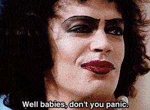

Digital Humanities is not a unified field but an array of convergent practices that explore a universe in which:
The Digital Humanities seeks to play an inaugural role with respect to a world in which, no longer the sole producers, stewards, and disseminators of knowledge or culture, universities are called upon to shape natively digital models of scholarly discourse for the newly emergent public spheres of the present era (the www, the blogosphere, digital libraries, etc.), to model excellence and innovation in these domains, and to facilitate the formation of networks of knowledge production, exchange, and dissemination that are, at once, global and local.
Like all media revolutions, the first wave of the digital revolution looked backward as it moved forward. Just as early codices mirrored oratorical practices, print initially mirrored the practices of high medieval manuscript culture, and film mirrored the techniques of theater, the digital first wave replicated the world of scholarly communications that print gradually codified over the course of five centuries: a world where textuality was primary and visuality and sound were secondary (and subordinated to text), even as it vastly accelerated the search and retrieval of documents, enhanced access, and altered mental habits. Now it must shape a future in which the medium-specific features of digital technologies become its core and in which print is absorbed into new hybrid modes of communication.
The first wave of digital humanities work was quantitative, mobilizing the search and retrieval powers of the database, automating corpus linguistics, stacking hypercards into critical arrays. The second wave is qualitative, interpretive, experiential, emotive, generative in character. It harnesses digital toolkits in the service of the Humanities’ core methodological strengths: attention to complexity, medium specificity, historical context, analytical depth, critique and interpretation. Such a crudely drawn dichotomy does not exclude the emotional, even sublime potentiality of the quantitative any more than it excludes embeddings of quantitative analysis within qualitative frameworks. Rather it imagines new couplings and scalings that are facilitated both by new models of research practice and by the availability of new tools and technologies.
Interdisciplinarity/transdisciplinarity/multidisciplinarity are empty words unless they imply changes in language, practice, method, and output.
Empty or not, these words have paved the way. But now it’s time to model the future through projects that do more than talk the talk.